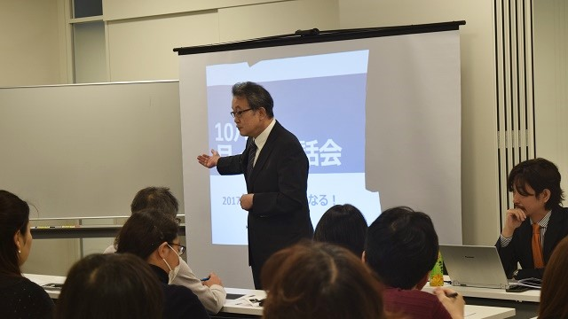
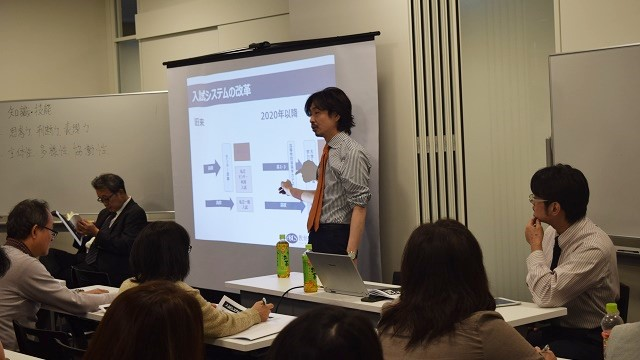
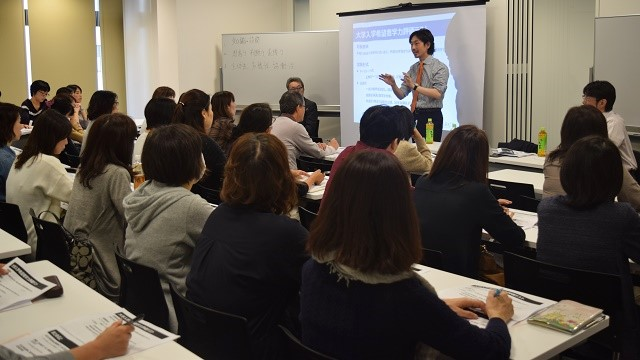

ここのところ冬を思わせるような肌寒い日が続いていましたが、それでも昼は結構日差しの強い日もあったりと体調を崩しやすい季節ですね。皆さんも健康管理には気をつけましょう。
さて、そんな中珍しく穏やかな昼下がりの日曜日（23日）ひとつのイベントが行われました。
その名も我が教育研究所主催「月イチお話会」。テーマは「2017年度高校入試はこうなる」
会場は柏駅近くのD one タワー。ひときわ目立つ高層ビル。新しい建物なのでピカピカ。会場は３階なのでエレベーターで。しかし中は意外に広く、多くのブースがあり様々な催しが行われている模様。
自分の会場がどこか分からず少しの間ウロウロ探しまわる始末。
あわや遅刻かと思われるタイミングでやっと到着。冷や汗。
既に参加者の皆さん、続々と受け付けされていて、私は２人の研究所員と部屋の隅で最終打ち合わせし定刻に開始！
2020年大学入試では何を評価する？
こうして満員の中私の挨拶から会は始まりました。まず私が述べたのは、千葉県特にこの東葛地域（柏、松戸、我孫子、流山など）は首都圏でも人口増加地帯であり、その分子どもの数が多く高校入試の倍率は日本一高いということ。
たとえば人気のある公立高校でも実質競争率は2倍～2.5倍、つまり受験者の半数以上が落ちること。私立高校も３～５倍あることを話すと、会場からどよめきが…。
さらに私は追いうちをかけます。「ですからこの地域のお子さんにとって高校に受かることは、大学受験よりもある意味難しいのです」…とさらなるドヨメキが…。

（本音炸裂！ 熱弁中）これは脅しているのではなく、まず皆さんに正しく実態を知って欲しいからで、だからこの地域では受験する高校が平均４～５校になることを理解してもらいたいのです。
続けて、今日は「本音トーク」と銘打っていることもあり「都内に比べるとこの辺の高校は受験者が多いことに安心してか、経営努力が全体に不足している」とズバリ言わせてもらいました。マァ、ハッキリ言って偏差値の高い高校に行ってもその後の伸びは意外と低いと「言い難いこと」を言ったわけです。
その後も私の主観と断った上で各学校の実態や、先生方の熱意などについてかなり言いたい放題（！？）言わせていただきました。
その後、研究員の庄本君にバトンタッチして「2020年の大学入試改革」の話へ。
庄本氏、私と違って冷静かつ詳細に来たるべき大学入試改革のポイントや背景、そして将来予測などをパワポを使って淡々と説明していきます。

（冷静沈着な庄本氏）庄本君いわく。今後大学入試で評価される学力は以下の通り。
1. 十分な知識・技能
2. それらを基盤にして答えが一つに定まらない問題に自ら解を見いだしていく思考力・判断力・表現力等の能力
3. これらの基になる主体性を持って多様な人々と協働して学ぶ態度
そしてこれら３項のうち、１と２を「大学入学希望者学力テスト」で、３を「調査書」「入学希望理由書」「面接」などではかると解説。
当初、改革の「目玉」とされた「高等学校基礎学力テスト」は大学入試そのものには当面使用しないという新情報を披露。
これは結構知らない人がいた模様。
さらに入試改革の背景として社会環境の変化があること。知識技能だけでは通用しない社会状況や国際関係があることを話しました。
トークライブを終えて

最後は、私と庄本、池村の3人でトーク形式での話。
要点は、なぜ大学、高校入試で記述式や論述が増えているのか。あるいは小学校から高校までの授業でもアクティブラーニングなど、知識を与えられる形から討論したり調べたり発表したりという「生徒主体」型に移行しているのかについて、その答えはまさに自ら主体的に考え問題意識をもち、さらに発見解決をしていける人材の養成が急務だからという点にあるわけです。
早いうちからそのような「主体的」「能動的」な人間を育てるためには、今までのように知識を表面的に覚える学習ではいけない。カリキュラムや授業法も変え、入試の方法も変えていく。
一点刻みの点数ではかる力ではなく、もっとトータルな人間力を問うものに変えていくということです。
そんな話をしながら締めくくりとして、近隣の高校での取り組みや予想される入試の変化を占ってみました。
私としては久しぶりに、本音で「ぶっちゃけ話」を皆さんの前で話すことができて個人的にはスッキリ（？）した感があります。
30年以上に渡って学校や塾と関わってきた者として、たくさんの情報をもちながら全てを話すことはできない事情もあり、今回それらの一部とはいえお話できたことは、私だけでなく多くの人にもお役に立てたのではないかといささか満足感もあります。
なるべく分かりやすくかつ楽しく話せたと思っています。
アンケートなどを見る限り「楽しかった」「濃い話が聞けて良かった」という声も多く、皆さんにも楽しんでもらえたようで良かったし、ホッとしています。
これからも本音トークを続けていきます。
教育ほど人々の思い込みに彩られているものはない。だから「本当のことを伝えたい」。そう思っています。
教育に関心のある方はぜひ会場に来てください。
私たちの「お話会」で本音で語り合いましょう。